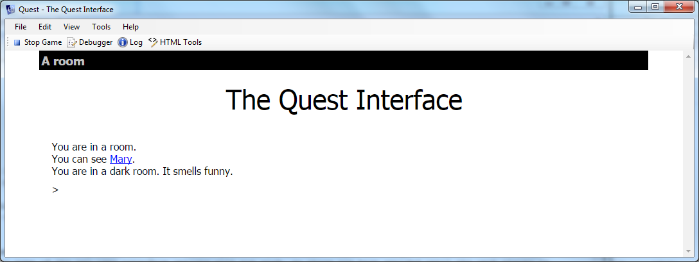

The UI Style
Quest offers a number of options for making your game look good, and fit the style and atmosphere you want. All these options can be accessed from various tabs on the game object.
This is the classic Quest interface:

The Display Tab
On the Display tab of the game object, there are options for changing the text, the background and (if used) hyperlinks.
For text, you can set the colour, font and size. There are two types of fonts, the built-in (base) fonts and web fonts.
A web font will be downloaded to the player’s computer when she starts your game, and offers a huge variety of fonts (and a link below will help you choose). When choosing a font, remember that text adventures involve a fair bit of reading, so ensure you chose a font that not only looks cool, but is easy to read too. Changing the font size can also improve readability.
If you do use a web font, it is a good idea to also select a suitable base font, and this will be used if the web font cannot be accessed.
The background section allows you to set the colour of the page and the margins on either side. You can also choose to have an image for the margins, and to make the page transparent. You can also have the page a blend from one colour at the top to another at the bottom. Some restraint is suggested here!
There are further options for setting the style for hyperlinks, and also for verb text (the drop down lists that appear when an object hyperlink to clicked).
This example shows the subtle use of a colour blend, in a game with the command line turned off.

The Interface Tab
The Interface tab is where you control the features of the UI. Here you can turn on or off: the map; the game panes; the command bar; the location bar; the border; custom layout; and the picture frame.
Turning a feature on will display additional options for that feature.
Map
You can set the scale and height. You can also set the colour and width for exits.
Game panes
You can selectively turn off a pane, or add a control or custom status pane. You can move the status and compass to the top (which will stop them moving up and down as the inventory changes). You can also select from a number of colour schemes.
Command bar
You can use a shadow box, or no box at all (and give own cursor). Due to the limitations of CSS, if you are using a colour blend for the background, the command bar background will ignore it, so the classic box is probably best.
This example uses a cursor with the panes turned off to give a minimalist look.

You can use any HTML character as the cursor (or several), and there are some pretty funky ones in UTF-8, from a pointing hand to the yin yang symbol (though they may not be available in every font in every browser, so do test thoughly).
To get these symbols in your game, you need to use the decimal value, with &# before it and ; after. This will give a heart cursor, for example:
♥
Location bar
You can turn off the classic location bar style, and set your own colours. You can also hide the save button (for the web player; players can still save via the SAVE command).
Border
The border surrounds the page, separating it from the margins. You can set the colour.
Custom layout
You can set the padding and the width.
Picture frame
You can set it to be clear for rooms with no image set.
The Room Descriptions Tab
With the Room Descriptions tab, you can control what happens when the player enters a room (or types LOOK). Note that “Automatically generate room descriptions” does not mean Quest will do the work for you! Rather, it means it will list the exits and the objects for you. If the box is ticked, you can control their order by modifying the numbers (set to zero if you do not what that one displayed).
Hopefully most of the options are self-explanatory; experiment and see what works best for your game.